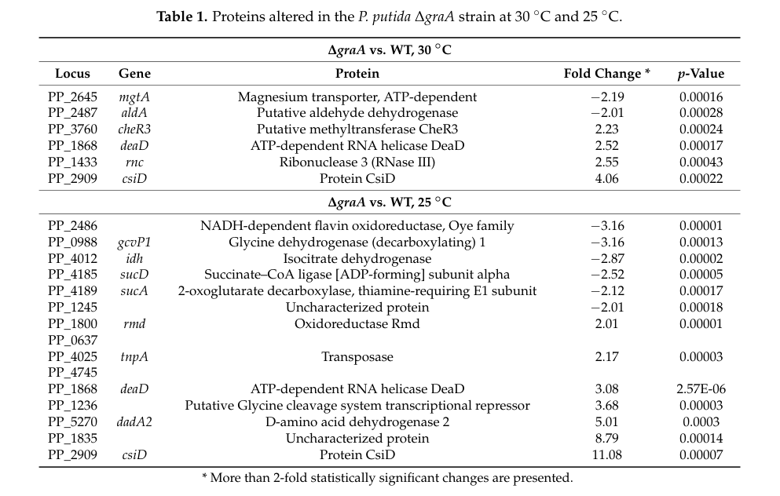

sucA (PP_4189) encodes the E1 component (2-oxoglutarate dehydrogenase, EC 1.2.4.2) of the 2-oxoglutarate dehydrogenase complex (OGDHc; also called the alpha-ketoglutarate dehydrogenase complex, KGDH). Together with the E2 dihydrolipoyl succinyltransferase (SucB) and the E3 dihydrolipoyl dehydrogenase (LpdG), SucA catalyzes the oxidative decarboxylation of 2-oxoglutarate to succinyl-CoA, releasing CO2 and reducing NAD+ to NADH. SucA performs the first, thiamine-diphosphate (ThDP)-dependent step, decarboxylating 2-oxoglutarate and transferring the resulting succinyl moiety to the lipoyl group carried on the E2 component. This reaction is an irreversible step of the tricarboxylic acid (TCA) cycle and a major node connecting carbon, nitrogen (via 2-oxoglutarate/glutamate), and redox metabolism. The OGDH complex is a large, soluble multienzyme assembly located in the cytoplasm of bacteria.
| GO Term | Evidence | Action | Reason |
|---|---|---|---|
|
GO:0004591
oxoglutarate dehydrogenase (succinyl-transferring) activity
|
IEA
GO_REF:0000120 |
ACCEPT |
Summary: Core molecular function. This is the E1 enzymatic activity (EC 1.2.4.2) of the OGDH complex, matching the UniProt RecName and domain architecture (TPP_E1_OGDC-like CDD, IPR011603 2-oxoglutarate_DH_E1). Although IEA, this is strongly supported by family/EC assignment and the conserved domain set.
|
|
GO:0005829
cytosol
|
IEA
GO_REF:0000118 |
ACCEPT |
Summary: The bacterial OGDH complex is a soluble cytoplasmic assembly of central carbon metabolism. The annotation is consistent with the known localization, though the GO term "cytosol" (GO:0005829) is the term applied by TreeGrafter.
|
|
GO:0006099
tricarboxylic acid cycle
|
IEA
GO_REF:0000118 |
ACCEPT |
Summary: Core biological process. The OGDH complex catalyzes the 2-oxoglutarate to succinyl-CoA step of the TCA cycle. Well supported for this gene in P. putida KT2440 (sucA = PP_4189 repeatedly identified as a key Krebs cycle enzyme).
|
|
GO:0016624
oxidoreductase activity, acting on the aldehyde or oxo group of donors, disulfide as acceptor
|
IEA
GO_REF:0000002 |
KEEP AS NON CORE |
Summary: This is a parent/more general molecular function term covering the E1 oxidoreductase chemistry (oxo-group donor, lipoyl-disulfide acceptor). It is not wrong, but it is a less informative generalization of the specific E1 activity already captured by GO:0004591. Keeping as non-core to avoid redundancy with the precise term.
|
|
GO:0030976
thiamine pyrophosphate binding
|
IEA
GO_REF:0000002 |
ACCEPT |
Summary: SucA is a ThDP (thiamine diphosphate)-dependent decarboxylase; the UniProt cofactor annotation lists thiamine diphosphate, and the InterPro signature (IPR011603, THDP-binding fold) supports this. Accept as a supporting molecular function.
|
|
GO:0045252
oxoglutarate dehydrogenase complex
|
IEA
GO_REF:0000118 |
ACCEPT |
Summary: Correct cellular component. SucA is the E1 component and a structural part of the OGDH complex (with SucB/E2 and LpdG/E3). Operon-context evidence in KT2440 places sucA with sucB and lpdG.
|
The research report should be a detailed narrative explaining the function, biological processes, and localization of the gene product. Citations should be given for all claims.
You should prioritize authoritative reviews and primary scientific literature when conducting research. You can supplement
this with annotations you find in gene/protein databases, but these can be outdated or inaccurate.
We are specifically interested in the primary function of the gene - for enzymes, what reaction is catalyzed, and what is the substrate specificity? For transporters, what is the substrate? For structural proteins or adapters, what is the broader structural role? For signaling molecules, what is the role in the pathway.
We are interested in where in or outside the cell the gene product carries out its function.
We are also interested in the signaling or biochemical pathways in which the gene functions. We are less interested in broad pleiotropic effects, except where these elucidate the precise role.
Include evidence where possible. We are interested in both experimental evidence as well as inference from structure, evolution, or bioinformatic analysis. Precise studies should be prioritized over high-throughput, where available.
Multiple KT2440-focused studies explicitly identify sucA as PP_4189 and annotate it as the α-ketoglutarate/2‑oxoglutarate dehydrogenase E1 component (SucA) in the tricarboxylic acid (TCA) cycle, matching the UniProt Q88FA9 description (2‑oxoglutarate dehydrogenase E1; EC 1.2.4.2). (avendano2023productionofselenium pages 5-6, ainelo2019pseudomonasputidaresponds pages 5-9)
SucA is the E1 (decarboxylase) component of the bacterial 2‑oxoglutarate dehydrogenase complex (also termed α‑ketoglutarate dehydrogenase complex; OGDHc/KGDH). (bunik2013translatingenzymologyinto pages 2-3, chakraborty2022engineeringthe2oxoglutarate pages 2-3)
At the pathway level, the complex catalyzes the oxidative decarboxylation of 2‑oxoglutarate (α‑ketoglutarate) to succinyl‑CoA:
This step is irreversible and is a major branch point linking carbon metabolism with nitrogen (via 2‑oxoglutarate/glutamate) and redox metabolism through NADH generation. (bunik2013translatingenzymologyinto pages 1-2)
The bacterial complex is a multienzyme assembly of:
- E1o (SucA): ThDP/TPP-dependent 2‑oxoglutarate dehydrogenase (decarboxylase) (bunik2013translatingenzymologyinto pages 2-3)
- E2o: dihydrolipoamide succinyltransferase (forms succinyl‑CoA from CoA) (bunik2013translatingenzymologyinto pages 2-3)
- E3: dihydrolipoamide dehydrogenase (FAD/NAD+-dependent reoxidation of reduced lipoamide, producing NADH) (bunik2013translatingenzymologyinto pages 2-3)
Key cofactors include ThDP (TPP), lipoate (lipoyllysine swinging arm on E2), CoA, FAD, and NAD+. (bunik2013translatingenzymologyinto pages 2-3)
Structurally, in E. coli (a reference bacterial system), the complex is described as having a 24‑mer E2 core with E1 and E3 peripherally associated, and catalysis involves transfer of intermediates via a lipoyl “swinging arm” mechanism. (chakraborty2022engineeringthe2oxoglutarate pages 2-3)
Mechanistic/structural work across bacterial systems indicates that E1o substrate specificity for 2‑oxoglutarate is supported by conserved active-site features, including a positively charged loop (e.g., Arg505-containing loop) implicated in recognizing the 5‑carboxylate of 2‑oxoglutarate. (bunik2013translatingenzymologyinto pages 3-4, bunik2013translatingenzymologyinto pages 4-6)
Engineering studies show that mutating specific E1 residues can broaden or alter substrate recognition (e.g., variants accepting substrates lacking the 5‑carboxyl group), illustrating how E1 chemistry can be retuned for nonnative substrates in related systems. (chakraborty2022engineeringthe2oxoglutarate pages 1-2)
In KT2440, sucA (PP_4189) is repeatedly described as a key Krebs/TCA cycle enzyme, consistent with the canonical OGDHc role in producing succinyl‑CoA and NADH from 2‑oxoglutarate. (avendano2023productionofselenium pages 5-6, ainelo2019pseudomonasputidaresponds pages 5-9)
RNA-level investigations in P. putida KT2440 place sucA in operon context with other TCA genes, including sucB and lpdG (as part of the α‑ketoglutarate dehydrogenase complex components), and suggest larger transcriptional units that can include sdh and suc genes. (geiger2019investigationofrnabased pages 18-22)
The OGDHc is a soluble cytosolic enzyme complex in bacteria (as part of central carbon metabolism); consistent with this, KT2440 studies treat SucA as a central metabolic enzyme measured in whole-cell proteomes. (ainelo2019pseudomonasputidaresponds pages 5-9, kratzl2024pseudomonasputidaas pages 7-9)
A proteomics/metabolomics study of the GraT toxin system in P. putida (KT2440-derivative background) reported that TCA-cycle enzymes including SucA are downregulated when GraT is active (ΔgraA). In extracted quantitative data, SucA shows a fold change of −2.12 (ΔgraA vs WT, 25 °C), with other enzymes in the same TCA segment also down (Idh −2.87; SucD −2.52). (ainelo2019pseudomonasputidaresponds media c323b5f8, ainelo2019pseudomonasputidaresponds pages 5-9)
These changes were interpreted as part of a coordinated decrease in flux through the isocitrate→succinate segment of the TCA cycle. (ainelo2019pseudomonasputidaresponds pages 5-9)
Work on RNA motifs reports a conserved sucA RNA / sucA‑II motif in the 5′ UTR and notes two transcription start sites in P. putida KT2440, including one ~110 nt upstream of the ORF. The motif was proposed as a potential cis-regulatory element because predicted structures overlap the Shine–Dalgarno region. (geiger2019investigationofrnabased pages 22-27, geiger2019investigationofrnabased pages 83-87)
However, extensive ligand screening and follow-up experiments did not validate a classic small-molecule riboswitch mechanism for sucA‑II. Instead, results suggested possible protein-mediated regulation; RNA pulldown experiments nominated candidate interacting proteins including SucC/SucD (consistent with potential operon-level feedback). (geiger2019investigationofrnabaseda pages 83-87, geiger2019investigationofrnabased pages 83-87)
Overall, the best-supported current interpretation from these data is that post-transcriptional control may exist, but its mechanism and physiological ligand(s) remain unresolved. (geiger2019investigationofrnabased pages 83-87, geiger2019investigationofrnabaseda pages 83-87)
A 2023 Microbial Biotechnology study of aerobic selenite reduction in P. putida KT2440 used genetic approaches and identified sucA (PP_4189) among genes implicating 2‑ketoglutarate/glutamate metabolism as important for converting selenite to selenium. The authors explicitly identify sucA as encoding 2‑oxoglutarate dehydrogenase and a key Krebs cycle enzyme. (avendano2023productionofselenium pages 5-6)
Quantitative/experimental context: Experiments were conducted in the presence of 1 mM selenite; despite optical density differences (attributed in part to elemental selenium formation), the authors report no differences in CFUs for at least 22 h between WT and mutants under selenite exposure. (avendano2023productionofselenium pages 5-6)
This provides recent, organism-specific evidence that sucA-linked central metabolism affects a real biotransformation phenotype (selenite → selenium nanoparticles). (avendano2023productionofselenium pages 5-6)
A 2024 Communications Biology multi-omics study of a defined synthetic co-culture (cyanobacterium feeding sucrose to P. putida) reports decreased protein abundances of SucA/B/D and Idh in P. putida alongside increased glyoxylate-cycle enzymes AceA and GlcB, interpreted as partial TCA “shutdown” and redirection through the glyoxylate cycle. (kratzl2024pseudomonasputidaas pages 7-9)
Quantitative transcriptomics in the same study reported idh transcript upregulation (log2-FC = 1.9) and aceA transcript downregulation (log2-FC = −2.64), emphasizing that transcript–protein concordance was only moderate and suggesting additional layers of regulation. (kratzl2024pseudomonasputidaas pages 7-9)
The 2023 KT2440 study indicates that manipulating central metabolic nodes including sucA can affect selenite biotransformation to selenium nanoparticles, and identifies gene targets of potential biotechnological interest for tuning nanoparticle formation rate. (avendano2023productionofselenium pages 5-6)
More generally, authoritative enzymology literature emphasizes OGDHc as a rate-limiting and regulatable node at the intersection of carbon flux and redox status. (bunik2013translatingenzymologyinto pages 2-3, bunik2013translatingenzymologyinto pages 1-2)
In applied contexts, the 2024 co-culture study illustrates a real implementation of multi-omics to diagnose central metabolism rewiring (including downshifts in SucA/B/D proteins) as part of designing or understanding microbial consortia. (kratzl2024pseudomonasputidaas pages 7-9)
A detailed review of the OGDHc frames this complex as an irreversible, rate-limiting TCA step whose flux is tuned through enzyme–ligand interactions and protein–protein interactions, and notes that component stoichiometry and cofactor interactions can serve as regulatory handles. (bunik2013translatingenzymologyinto pages 1-2, bunik2013translatingenzymologyinto pages 2-3)
In the context of functional annotation for KT2440 sucA (Q88FA9), these authoritative sources justify annotating SucA as:
- ThDP-dependent decarboxylase E1 component of OGDHc
- critical for producing succinyl-CoA and NADH from 2-oxoglutarate
- likely a key control point linking carbon/nitrogen/redox metabolism
| Evidence category | Finding | Experimental context/system | Source (authors year journal) | URL/DOI |
|---|---|---|---|---|
| Function/reaction | sucA (PP_4189) in Pseudomonas putida KT2440 is identified as the E1 component of 2-oxoglutarate dehydrogenase (α-ketoglutarate dehydrogenase), a ThDP-dependent enzyme in the 2-oxoglutarate dehydrogenase complex. The complex converts 2-oxoglutarate + CoA + NAD+ → succinyl-CoA + CO2 + NADH. (avendano2023productionofselenium pages 5-6, geiger2019investigationofrnabased pages 22-27, chakraborty2022engineeringthe2oxoglutarate pages 2-3, bunik2013translatingenzymologyinto pages 2-3) | KT2440 gene assignment from mutant study; broader bacterial OGDHc mechanism from reviews/enzymology papers | Avendaño et al. 2023 Microbial Biotechnology; Geiger 2019; Chakraborty et al. 2022 Reactions; Bunik et al. 2013 Current Chemical Biology | https://doi.org/10.1111/1751-7915.14215; https://doi.org/10.3390/reactions3010011; https://doi.org/10.2174/2212796811307010008 |
| Function/reaction | The OGDH complex is a multienzyme E1/E2/E3 assembly: E1o/SucA performs ThDP-dependent decarboxylation and succinyl transfer to lipoyl groups on E2; E2 forms succinyl-CoA; E3 reoxidizes dihydrolipoamide using FAD and NAD+. Cofactors highlighted include ThDP, lipoate, CoA, FAD, NAD+, with E2 built on a 24-mer core and flexible lipoyl “swinging arm” domains for substrate channeling. (chakraborty2022engineeringthe2oxoglutarate pages 2-3, bunik2013translatingenzymologyinto pages 2-3, bunik2013translatingenzymologyinto pages 4-6) | Authoritative conceptual background from bacterial OGDHc reviews and engineering paper | Chakraborty et al. 2022 Reactions; Bunik et al. 2013 Current Chemical Biology | https://doi.org/10.3390/reactions3010011; https://doi.org/10.2174/2212796811307010008 |
| Pathway role | SucA is placed in the Krebs/TCA cycle as a key enzyme linking 2-oxoglutarate metabolism to succinyl-CoA formation, i.e., a central node connecting carbon flow and redox generation. (avendano2023productionofselenium pages 5-6, ainelo2019pseudomonasputidaresponds pages 5-9, bunik2013translatingenzymologyinto pages 1-2) | KT2440 mutant phenotype paper and stress proteomics; broader metabolic review | Avendaño et al. 2023 Microbial Biotechnology; Ainelo et al. 2019 Toxins; Bunik et al. 2013 Current Chemical Biology | https://doi.org/10.1111/1751-7915.14215; https://doi.org/10.3390/toxins11020103; https://doi.org/10.2174/2212796811307010008 |
| Pathway/operon context | In P. putida KT2440, sucA is reported in operon context with sucB and in broader TCA-linked transcriptional units that can include sdh genes, sucAB, sucABCD, and lpdG; the α-KGDH complex in this context comprises SucA, SucB, and LpdG. (geiger2019investigationofrnabased pages 18-22) | Transcript/operon analysis and RNA-regulation study in KT2440 | Geiger 2019 | n/a |
| Regulation | A conserved sucA RNA motif / sucA-II motif in the 5′ UTR was proposed as a cis-regulatory RNA because structural elements overlap the ribosome-binding region; in KT2440, two transcription start sites were reported, including one about 110 nt upstream of the ORF. (geiger2019investigationofrnabased pages 22-27, geiger2019investigationofrnabased pages 83-87) | Comparative RNA motif analysis and follow-up regulatory experiments | Geiger 2019 | n/a |
| Regulation | The small-molecule riboswitch model for sucA-II was not validated. A systematic screen of 55 candidates and another screen of 109 ligands failed to confirm a ligand-responsive riboswitch; instead, results suggest possible protein-mediated regulation. Candidate binders included SucC/SucD (possible operon-level feedback) and PP_4065, which increased RNA cleavage consistent with mRNA destabilization. (geiger2019investigationofrnabased pages 83-87, geiger2019investigationofrnabaseda pages 83-87, geiger2019investigationofrnabaseda pages 50-54) | In-line probing, RNA pulldown, RNase footprinting, reporter assays | Geiger 2019 | n/a |
| Regulation | In broader bacterial OGDHc, E1o/SucA is described as a major physiological regulation target and often rate-limiting; ThDP can act as both catalytic cofactor and allosteric regulator, and adenine nucleotides can modulate substrate binding. (bunik2013translatingenzymologyinto pages 2-3, bunik2013translatingenzymologyinto pages 4-6, bunik2013translatingenzymologyinto pages 1-2) | Review-level mechanistic/regulatory synthesis across bacterial systems | Bunik et al. 2013 Current Chemical Biology | https://doi.org/10.2174/2212796811307010008 |
| Phenotypes/stress links | In a KT2440 mutant collection studying selenium metabolism, the sucA mutant (PP_4189) showed a very slight reduction in growth rate and biomass formation and was among mutants with a slower growth rate than WT. The paper interprets this as consistent with sucA encoding a key Krebs cycle enzyme. (avendano2023productionofselenium pages 5-6) | KT2440 mutants grown with and without selenite during selenium nanoparticle studies | Avendaño et al. 2023 Microbial Biotechnology | https://doi.org/10.1111/1751-7915.14215 |
| Phenotypes/stress links | In the same KT2440 selenium study, 2-ketoglutarate/glutamate metabolism involving sucA was implicated as important for selenite reduction to elemental selenium/selenium nanoparticles. The authors highlight sucA among genes connecting central metabolism to selenium transformation. (avendano2023productionofselenium pages 5-6) | Genetic and analytical study of aerobic selenite reduction | Avendaño et al. 2023 Microbial Biotechnology | https://doi.org/10.1111/1751-7915.14215 |
| Phenotypes/stress links | Under GraT toxin stress in P. putida, SucA protein abundance decreased together with other TCA enzymes, supporting a model of repressed central carbon metabolism/TCA flux during toxin-induced physiological reprogramming. (ainelo2019pseudomonasputidaresponds pages 5-9, ainelo2019pseudomonasputidaresponds pages 1-3) | Proteomics and metabolomics in ΔgraA strain where GraT toxin is active | Ainelo et al. 2019 Toxins | https://doi.org/10.3390/toxins11020103 |
| Quantitative data | In the GraT study, SucA abundance decreased >2-fold in the ΔgraA strain at 25 °C; the extracted table gives a fold change of -2.12 for SucA. Other TCA enzymes in the same branch also dropped (e.g., Idh -2.87, SucD -2.52), supporting coordinated repression of the isocitrate-to-succinate segment. (ainelo2019pseudomonasputidaresponds pages 5-9, ainelo2019pseudomonasputidaresponds media c323b5f8) | Quantitative proteomics table from ΔgraA vs WT comparison | Ainelo et al. 2019 Toxins | https://doi.org/10.3390/toxins11020103 |
| Quantitative data | In the selenium study, growth/selenite experiments were carried out with 1 mM selenite. Although OD differed, the authors reported no CFU differences for at least 22 h between WT and mutants under selenite, indicating that optical changes may reflect selenium nanoparticle formation rather than loss of viability. (avendano2023productionofselenium pages 5-6) | KT2440 WT and mutant comparison during selenite reduction | Avendaño et al. 2023 Microbial Biotechnology | https://doi.org/10.1111/1751-7915.14215 |
| Quantitative data | Stress-dependent RNA pulldown experiments for sucA-related RNA regulation reported changing numbers of specifically bound proteins: 5 specific proteins in rich medium vs 17 in osmotic shock; 3 in rich medium, 3 in carbon limitation, and 7 in nitrogen limitation; at low pH with glutamate, 147 proteins were detected before filtering. These data support condition-dependent post-transcriptional regulation hypotheses rather than a validated ligand riboswitch. (geiger2019investigationofrnabased pages 65-68) | RNA–protein pulldown under osmoshock, carbon limitation (1 mM glucose), nitrogen limitation (6 mM NH4+), and pH-shift conditions | Geiger 2019 | n/a |
| Mechanistic specificity | Conserved E1o/SucA active-site features implicated in substrate specificity include an Arg505-containing loop for recognition of the substrate 5-carboxylate and conserved histidines (His539, His579, His747, His1020). Engineering of E1o residues His260 and His298 altered substrate recognition, demonstrating that E1 chemistry can be retuned for nonnative substrates. (chakraborty2022engineeringthe2oxoglutarate pages 1-2, bunik2013translatingenzymologyinto pages 4-6, bunik2013translatingenzymologyinto pages 3-4) | Structural/mutational enzymology in bacterial OGDHc systems | Chakraborty et al. 2022 Reactions; Bunik et al. 2013 Current Chemical Biology | https://doi.org/10.3390/reactions3010011; https://doi.org/10.2174/2212796811307010008 |
Table: This table summarizes the main functional-annotation evidence for Pseudomonas putida KT2440 sucA (PP_4189; UniProt Q88FA9), covering enzymatic function, pathway placement, regulation, stress-linked phenotypes, and quantitative findings from the gathered literature.
References
(avendano2023productionofselenium pages 5-6): Roberto Avendaño, Said Muñoz‐Montero, Diego Rojas‐Gätjens, Paola Fuentes‐Schweizer, Sofía Vieto, Rafael Montenegro, Manuel Salvador, Rufus Frew, Juhyun Kim, Max Chavarría, and Jose I. Jiménez. Production of selenium nanoparticles occurs through an interconnected pathway of sulphur metabolism and oxidative stress response in pseudomonas putida kt2440. Microbial Biotechnology, 16:931-946, Jan 2023. URL: https://doi.org/10.1111/1751-7915.14215, doi:10.1111/1751-7915.14215. This article has 26 citations and is from a peer-reviewed journal.
(ainelo2019pseudomonasputidaresponds pages 5-9): Andres Ainelo, Rando Porosk, Kalle Kilk, Sirli Rosendahl, Jaanus Remme, and Rita Hõrak. Pseudomonas putida responds to the toxin grat by inducing ribosome biogenesis factors and repressing tca cycle enzymes. Toxins, 11:103, Feb 2019. URL: https://doi.org/10.3390/toxins11020103, doi:10.3390/toxins11020103. This article has 10 citations.
(bunik2013translatingenzymologyinto pages 2-3): Victoria I. Bunik, Guenter Raddatz, and Slawomir Strumilo. Translating enzymology into metabolic regulation: the case of the 2- oxoglutarate dehydrogenase multienzyme complex. Apr 2013. URL: https://doi.org/10.2174/2212796811307010008, doi:10.2174/2212796811307010008. This article has 24 citations and is from a peer-reviewed journal.
(chakraborty2022engineeringthe2oxoglutarate pages 2-3): Joydeep Chakraborty, Natalia Nemeria, Yujeong Shim, Xu Zhang, Elena L. Guevara, Hetal Patel, Edgardo T. Farinas, and Frank Jordan. Engineering the 2-oxoglutarate dehydrogenase complex to understand catalysis and alter substrate recognition. Reactions, 3:139-159, Feb 2022. URL: https://doi.org/10.3390/reactions3010011, doi:10.3390/reactions3010011. This article has 8 citations.
(bunik2013translatingenzymologyinto pages 1-2): Victoria I. Bunik, Guenter Raddatz, and Slawomir Strumilo. Translating enzymology into metabolic regulation: the case of the 2- oxoglutarate dehydrogenase multienzyme complex. Apr 2013. URL: https://doi.org/10.2174/2212796811307010008, doi:10.2174/2212796811307010008. This article has 24 citations and is from a peer-reviewed journal.
(bunik2013translatingenzymologyinto pages 3-4): Victoria I. Bunik, Guenter Raddatz, and Slawomir Strumilo. Translating enzymology into metabolic regulation: the case of the 2- oxoglutarate dehydrogenase multienzyme complex. Apr 2013. URL: https://doi.org/10.2174/2212796811307010008, doi:10.2174/2212796811307010008. This article has 24 citations and is from a peer-reviewed journal.
(bunik2013translatingenzymologyinto pages 4-6): Victoria I. Bunik, Guenter Raddatz, and Slawomir Strumilo. Translating enzymology into metabolic regulation: the case of the 2- oxoglutarate dehydrogenase multienzyme complex. Apr 2013. URL: https://doi.org/10.2174/2212796811307010008, doi:10.2174/2212796811307010008. This article has 24 citations and is from a peer-reviewed journal.
(chakraborty2022engineeringthe2oxoglutarate pages 1-2): Joydeep Chakraborty, Natalia Nemeria, Yujeong Shim, Xu Zhang, Elena L. Guevara, Hetal Patel, Edgardo T. Farinas, and Frank Jordan. Engineering the 2-oxoglutarate dehydrogenase complex to understand catalysis and alter substrate recognition. Reactions, 3:139-159, Feb 2022. URL: https://doi.org/10.3390/reactions3010011, doi:10.3390/reactions3010011. This article has 8 citations.
(geiger2019investigationofrnabased pages 18-22): S Geiger. Investigation of rna-based regulation of gene expression in proteobacterial energy metabolism. Unknown journal, 2019.
(kratzl2024pseudomonasputidaas pages 7-9): Franziska Kratzl, Marlene Urban, Jagroop Pandhal, Mengxun Shi, Chen Meng, Karin Kleigrewe, Andreas Kremling, and Katharina Pflüger-Grau. Pseudomonas putida as saviour for troubled synechococcus elongatus in a synthetic co-culture – interaction studies based on a multi-omics approach. Communications Biology, Apr 2024. URL: https://doi.org/10.1038/s42003-024-06098-5, doi:10.1038/s42003-024-06098-5. This article has 8 citations and is from a peer-reviewed journal.
(ainelo2019pseudomonasputidaresponds media c323b5f8): Andres Ainelo, Rando Porosk, Kalle Kilk, Sirli Rosendahl, Jaanus Remme, and Rita Hõrak. Pseudomonas putida responds to the toxin grat by inducing ribosome biogenesis factors and repressing tca cycle enzymes. Toxins, 11:103, Feb 2019. URL: https://doi.org/10.3390/toxins11020103, doi:10.3390/toxins11020103. This article has 10 citations.
(geiger2019investigationofrnabased pages 22-27): S Geiger. Investigation of rna-based regulation of gene expression in proteobacterial energy metabolism. Unknown journal, 2019.
(geiger2019investigationofrnabased pages 83-87): S Geiger. Investigation of rna-based regulation of gene expression in proteobacterial energy metabolism. Unknown journal, 2019.
(geiger2019investigationofrnabaseda pages 83-87): S Geiger. Investigation of rna-based regulation of gene expression in proteobacterial energy metabolism. Unknown journal, 2019.
(geiger2019investigationofrnabased pages 65-68): S Geiger. Investigation of rna-based regulation of gene expression in proteobacterial energy metabolism. Unknown journal, 2019.
(geiger2019investigationofrnabaseda pages 50-54): S Geiger. Investigation of rna-based regulation of gene expression in proteobacterial energy metabolism. Unknown journal, 2019.
(ainelo2019pseudomonasputidaresponds pages 1-3): Andres Ainelo, Rando Porosk, Kalle Kilk, Sirli Rosendahl, Jaanus Remme, and Rita Hõrak. Pseudomonas putida responds to the toxin grat by inducing ribosome biogenesis factors and repressing tca cycle enzymes. Toxins, 11:103, Feb 2019. URL: https://doi.org/10.3390/toxins11020103, doi:10.3390/toxins11020103. This article has 10 citations.

id: Q88FA9
gene_symbol: sucA
product_type: PROTEIN
status: DRAFT
taxon:
id: NCBITaxon:160488
label: Pseudomonas putida (strain ATCC 47054 / DSM 6125 / CFBP 8728 / NCIMB 11950 / KT2440)
description: sucA (PP_4189) encodes the E1 component (2-oxoglutarate dehydrogenase, EC 1.2.4.2) of the 2-oxoglutarate dehydrogenase complex (OGDHc; also called the alpha-ketoglutarate dehydrogenase complex, KGDH). Together with the E2 dihydrolipoyl succinyltransferase (SucB) and the E3 dihydrolipoyl dehydrogenase (LpdG), SucA catalyzes the oxidative decarboxylation of 2-oxoglutarate to succinyl-CoA, releasing CO2 and reducing NAD+ to NADH. SucA performs the first, thiamine-diphosphate (ThDP)-dependent step, decarboxylating 2-oxoglutarate and transferring the resulting succinyl moiety to the lipoyl group carried on the E2 component. This reaction is an irreversible step of the tricarboxylic acid (TCA) cycle and a major node connecting carbon, nitrogen (via 2-oxoglutarate/glutamate), and redox metabolism. The OGDH complex is a large, soluble multienzyme assembly located in the cytoplasm of bacteria.
existing_annotations:
- term:
id: GO:0004591
label: oxoglutarate dehydrogenase (succinyl-transferring) activity
evidence_type: IEA
original_reference_id: GO_REF:0000120
qualifier: enables
review:
summary: Core molecular function. This is the E1 enzymatic activity (EC 1.2.4.2) of the OGDH complex, matching the UniProt RecName and domain architecture (TPP_E1_OGDC-like CDD, IPR011603 2-oxoglutarate_DH_E1). Although IEA, this is strongly supported by family/EC assignment and the conserved domain set.
action: ACCEPT
- term:
id: GO:0005829
label: cytosol
evidence_type: IEA
original_reference_id: GO_REF:0000118
qualifier: located_in
review:
summary: The bacterial OGDH complex is a soluble cytoplasmic assembly of central carbon metabolism. The annotation is consistent with the known localization, though the GO term "cytosol" (GO:0005829) is the term applied by TreeGrafter.
action: ACCEPT
- term:
id: GO:0006099
label: tricarboxylic acid cycle
evidence_type: IEA
original_reference_id: GO_REF:0000118
qualifier: involved_in
review:
summary: Core biological process. The OGDH complex catalyzes the 2-oxoglutarate to succinyl-CoA step of the TCA cycle. Well supported for this gene in P. putida KT2440 (sucA = PP_4189 repeatedly identified as a key Krebs cycle enzyme).
action: ACCEPT
- term:
id: GO:0016624
label: oxidoreductase activity, acting on the aldehyde or oxo group of donors, disulfide as acceptor
evidence_type: IEA
original_reference_id: GO_REF:0000002
qualifier: enables
review:
summary: This is a parent/more general molecular function term covering the E1 oxidoreductase chemistry (oxo-group donor, lipoyl-disulfide acceptor). It is not wrong, but it is a less informative generalization of the specific E1 activity already captured by GO:0004591. Keeping as non-core to avoid redundancy with the precise term.
action: KEEP_AS_NON_CORE
- term:
id: GO:0030976
label: thiamine pyrophosphate binding
evidence_type: IEA
original_reference_id: GO_REF:0000002
qualifier: enables
review:
summary: SucA is a ThDP (thiamine diphosphate)-dependent decarboxylase; the UniProt cofactor annotation lists thiamine diphosphate, and the InterPro signature (IPR011603, THDP-binding fold) supports this. Accept as a supporting molecular function.
action: ACCEPT
- term:
id: GO:0045252
label: oxoglutarate dehydrogenase complex
evidence_type: IEA
original_reference_id: GO_REF:0000118
qualifier: part_of
review:
summary: Correct cellular component. SucA is the E1 component and a structural part of the OGDH complex (with SucB/E2 and LpdG/E3). Operon-context evidence in KT2440 places sucA with sucB and lpdG.
action: ACCEPT
core_functions:
- description: Thiamine diphosphate-dependent E1 component catalyzing the oxidative decarboxylation of 2-oxoglutarate as the first step of the OGDH complex reaction, transferring the succinyl moiety to the lipoyl group of the E2 component
supported_by:
- reference_id: GO_REF:0000120
supporting_text: oxoglutarate dehydrogenase (succinyl-transferring) activity (EC:1.2.4.2) assigned to Q88FA9
molecular_function:
id: GO:0004591
label: oxoglutarate dehydrogenase (succinyl-transferring) activity
directly_involved_in:
- id: GO:0006099
label: tricarboxylic acid cycle
references:
- id: GO_REF:0000002
title: Gene Ontology annotation through association of InterPro records with GO terms
findings: []
- id: GO_REF:0000118
title: TreeGrafter-generated GO annotations
findings: []
- id: GO_REF:0000120
title: Combined Automated Annotation using Multiple IEA Methods
findings: []
- id: PMID:12534463
title: Complete genome sequence and comparative analysis of the metabolically versatile Pseudomonas putida KT2440.
findings: []
reference_review:
relevance: LOW
correctness: UNVERIFIED
review_notes: Genome sequence paper establishing the PP_4189/sucA locus in KT2440; background/genomic context for this gene. Citation from UniProt record, not independently PubMed-verified here.
{kind=link}